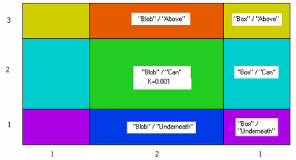

|
Setting Material Properties by Region and Layer |

  
|
|
Setting Material Properties by Region and Layer |
|
In our 2D problem, we specified the conductivity of the blob inside the REGION definition for the blob, and that continues to be the technique in 3D.
The difference now is that we must also specify the LAYER to which the definition applies. We do this with a LAYER qualification clause:
REGION 2 'blob' { the embedded blob }
LAYER 'Can' K = 0.001
START 'ring' (R,0)
ARC(CENTER=0,0) ANGLE=360
Without the LAYER qualification clause, the definition would apply to all layers lying above region 2 of the base plane. Here, the presence of the parameter definition inside a REGION and qualified by a LAYER selects a specific 3D compartment to which the specification applies.
In the following diagram, we have labeled each of the six distinct compartments with a (region,layer) coordinate.

The comprehensive logical structure of parameter redefinitions in the BOUNDARIES section with the location of parameter redefinition specifications in this grid can be described for the general case as follows:
BOUNDARIES
REGION 1
params(1,all) { parameter redefinitions for all layers of region 1 }
LAYER 1
params(1,1){ parameter redefinitions restricted to layer 1 of region 1 }
LAYER 2
params(1,2){ parameter redefinitions restricted to layer 2 of region 1 }
LAYER 3
params(1,3){ parameter redefinitions restricted to layer 3 of region 1 }
START(,) .... TO CLOSE { trace the perimeter }
REGION 2
params(2,all) { parameter redefinitions for all layers of region 2 }
LAYER 1
params(2,1) { parameter redefinitions restricted to layer 1 of region 2 }
LAYER 2
params(2,2) { parameter redefinitions restricted to layer 2 of region 2 }
LAYER 3
params(2,3) { parameter redefinitions restricted to layer 3 of region 2 }
START(,) .... TO CLOSE { trace the perimeter }
{ ... and so forth for all regions }